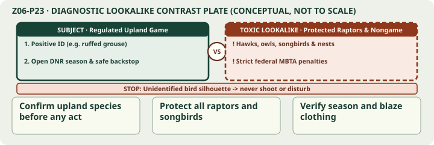

Z06-P23 · Hunting and fishing · New manuscript
Upland Game Birds and Protected Songbird/Raptor Exclusions
Distinguish regulated upland game birds (ruffed grouse, pheasant) from federally protected hawks, owls, and nongame birds.
When it applies · Young aspen forests, prairie grasslands, and wooded edges in Minnesota.
Equipment · Current DNR hunting guide, binoculars, blaze orange visibility gear when afield in season.

Actions
- Verify exact positive species identification before any lawful upland harvest—distinguishing ruffed grouse in young aspen cover and ring-necked pheasants in grassland cover from protected spruce grouse closures or nongame birds.[H02, H14]
- Protect all raptors (hawks, owls, eagles), songbirds, woodpeckers, and nests unconditionally under the federal Migratory Bird Treaty Act and state law.[H14, L14]
- Wear required Minnesota blaze orange/pink clothing during applicable seasons and verify clear sky/ground backstops beyond flying birds.[H02, H03]
Failure recognition · Firing at an unidentified flushed silhouette risks illegally killing a protected raptor or endangered species and injuring companions.[H02, H03, H14]
Verify · Positive species ID, open season, safe firing zone, and blaze visibility are confirmed prior to any upland activity.[H02, H03, H14]
Stop or change course · Stop immediately whenever bird identity, background safety (buildings, roads, dogs, partners), or legal status is uncertain.[H02, H03, H14]
Evidence and editorial notes
- H02 · Minnesota DNR · Minnesota Hunting and Trapping Regulations (Current web edition)
- Section: Hunting licenses, zones, seasons, and legal methods · Conditions: Minnesota big game, small game, and bird hunting
Support: Hunters must verify current license, permit-area, season, legal-hours, blaze-clothing, and method rules with the governing authority prior to afield activity.
Limitations: Private-land trespass law, municipal ordinances, and tribal jurisdiction apply separately; emergencies do not suspend wildlife law. · Conflicting evidence: None noted.
Editorial note: Establishes Z06 hunting authority gate. · Specialist reviewer: Minnesota DNR wildlife law reviewer
Primary source · checked 2026-11-25 - H03 · Minnesota DNR · Firearms Safety Certification and Hunter Education (Current web edition)
- Section: Four fundamental firearm safety rules and certification · Conditions: Any firearm handling, transport, or field carry
Support: Treat every firearm as loaded, keep the muzzle in a safe direction, keep finger off the trigger until ready to shoot, and verify target and what is beyond it.
Limitations: Certification is required by age/statute in Minnesota; written summaries never substitute for formal certified safety instruction. · Conflicting evidence: None noted.
Editorial note: Mandatory Z06 bounded weapon-safety gate. · Specialist reviewer: Certified hunter-education and firearm safety instructor
Primary source · checked 2026-11-25 - H14 · U.S. Fish & Wildlife Service · Migratory Bird Treaty Act Protections (Current web edition)
- Section: Migratory Bird Treaty Act federal protections · Conditions: All native migratory birds, nests, feathers, and eggs
Support: Federal law prohibits taking, possessing, or disturbing protected migratory birds, nests, or eggs outside regulated hunting seasons and federal permits.
Limitations: Waterfowl hunting requires both state licenses and a federal Duck Stamp plus non-toxic shot rules. · Conflicting evidence: None noted.
Editorial note: Enforces federal migratory bird law. · Specialist reviewer: USFWS and wildlife legal reviewer
Primary source · checked 2026-11-25 - L14 · Minnesota DNR · Birds of Minnesota and Protected Species Reference (Current web edition)
- Section: Raptor and migratory bird vulnerability to exposed bait sets · Conditions: Woodlands, wetlands, and prairie edges with raptors and scavengers
Support: Exposed meat baits attract protected hawks, owls, eagles, and scavengers, creating severe federal and state non-target capture hazards.
Limitations: Federal MBTA and Bald and Golden Eagle Protection Act impose strict penalties for protected bird injury. · Conflicting evidence: None noted.
Editorial note: Highlights avian non-target vulnerability. · Specialist reviewer: Ornithologist and legal reviewer
Primary source · checked 2026-11-25
Source lineage · New manuscript (Z06 P17 wildlife ecology) · Classification · New manuscript.